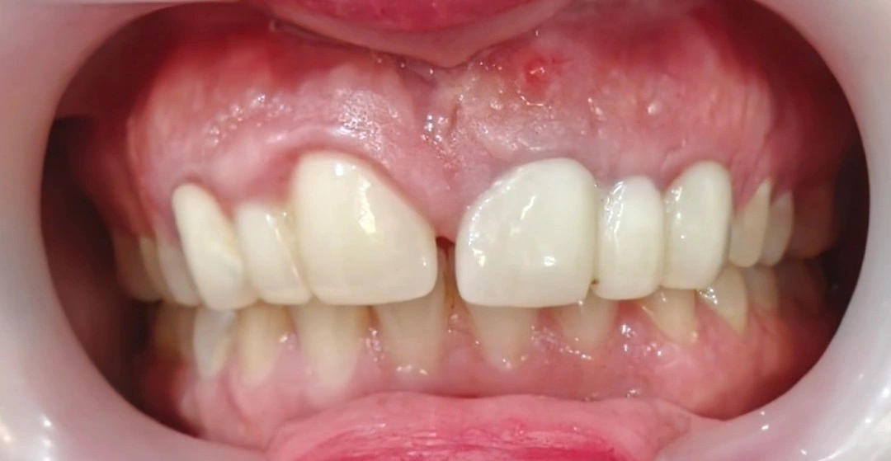

Chairside 33
چالشهای توزیع فضا و بیومکانیک در حضور عفونت فعال اپیکال

بیمار با محدودیت زمانی آمده بود تا بریجهای قدامی را همین امروز عوض کند و لبخند را درست کند؛ اما فیستول فعال روی سانترال چپ، و سانترالهای اورسایز کنار پونتیکهای باریک لترال، نشان میداد مسئله فقط ظاهر روکشها نیست. کار این ویزیت جدا کردن عفونت اپیکال از توزیع غلط فضا بود — و رد کردن شروع فوری زیبایی روی پایهای که هنوز ارزیابی نشده.
شرحِ مراجعه. بیمار (با محدودیت زمانی شدید) با شکایت از ظاهر نامناسب لبخند و درخواست خارجکردن بریجهای فعلی و شروع فوری درمان زیبایی مراجعه کرد. در تاریخچه، دندان یک بالا چپ (دندان ۲۱) دارای سابقه عفونت و جراحی اپیکال بوده که در حال حاضر با یک فیستول فعال در مخاط همراه است.
ارزیابی. وضعیت بالینی دندانها و توزیع فضا به شدت دچار مشکل بود. در بررسیها چند خطای فاحش در درمانهای قبلی دیده میشد:
- شکست درمان ریشه دندان ۲۱: در بررسی رادیوگرافی، مشخص شد که جراحی اپیکال قبلی کاملاً غیراصولی بوده است. هیچگونه پرکردگی رتروگراد (Retrograde filling) برای سیلکردن انتهای ریشه انجام نشده و صرفاً به باز کردن و درناژ بسنده شده است. در نتیجه، باکتریها همچنان در سیستم کانال ریشه فعال هستند و دندان کاندید کشیدن (Extraction) است.
- مدیریت غلط فضا (Poor Space Management): دندانهای سانترال فعلی به شدت اورسایز (Oversized) هستند و با این وجود دیاستم میدلاین بسته نشده است. دندانهای لترال بسیار باریک و بهصورت پونتیک طراحی شدهاند. شواهد نشان میدهد بیمار از ابتدا فاقد دندانهای لترال بوده و یک فضای دیاستم وسیع داشته است. در درمان قبلی تلاش شده تا با بزرگکردن غیرطبیعی سانترالها فضا پر شود که از نظر زیبایی کاملاً شکست خورده است.
- ارزیابی علت دیاستم: ادعای بیمار مبنی بر ایجاد دیاستم پس از بروز آبسه از نظر بیومکانیک رد میشود. ایجاد یک دیاستم متقارن دقیقاً در خط وسط، آن هم بین دو بریج مجزا، نمیتواند صرفاً پیامد یک ضایعه پریاپیکال باشد و ریشه در مشکل اولیه توزیع فضا دارد.
تصمیم و طرح درمان. درخواست بیمار برای شروع فوری درمان زیبایی روی پایه دندانهای فعلی اکیداً رد شد.
به بیمار توضیح داده شد که دندان ۲۱ غیرقابل نگهداری است. با این حال، حتی با کشیدن دندان ۲۱، امکان اصلاح زیبایی به دلیل موقعیت دندان ۱۱ (یک بالا راست) وجود ندارد.
طرح درمان پیشنهادی (با توجه به افت شدید پروگنوز در صورت استفاده از ارتودنسی) منوط به خارجکردن بریجها و ارزیابی دقیق دندان ۱۱ است. در صورتی که دندان ۱۱ نیز کشیدنی باشد یا پروگنوز ضعیفی داشته باشد، میتوان با جایگذاری دو واحد ایمپلنت با فاصلهگذاری و توزیع فضای اصولی، مشکل زیبایی و بیومکانیک را بهطور همزمان برطرف کرد. در غیر این صورت، بدون اصلاح فضا، زیبایی بیمار تا آخر عمر دچار نقص خواهد بود.
️Clinical Tip: در درمانهای زیبایی ناحیه قدامی، مشکلاتی که ریشه در «توزیع نامناسب فضا» (Space distribution) و فقدان دندان دارند، با تعویض صرفِ روکشها یا بریجها حل نمیشوند. نادیده گرفتن فونداسیون بیولوژیک (مثل عفونتهای فعال اپیکال) و تسلیم شدن در برابر فشار بیمار برای درمان سریع، تنها منجر به شکستهای پیچیدهتر و از دست رفتن اعتماد بیمار در درازمدت خواهد شد.
محتوای این صفحه برای استفادهٔ آموزشی دندانپزشکان و دانشجویان دندانپزشکی تهیه شده است.